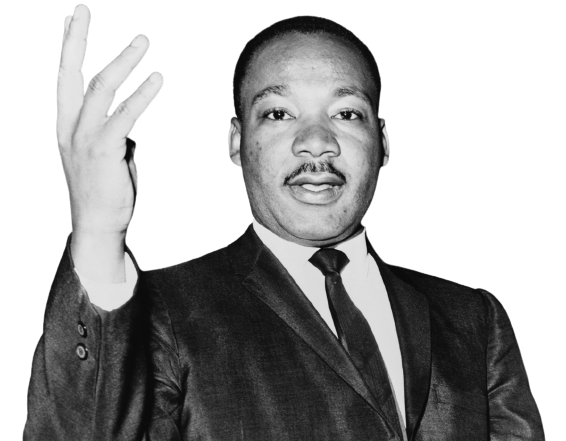
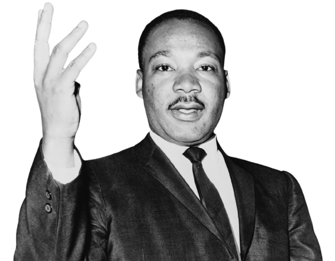

"We shall overcome because the arc of the moral universe is long, but it bends toward justice."
1929-1968
"We shall overcome because the arc of the moral universe is long, but it bends toward justice."
artin Luther King, Jr., (January 15, 1929-April 4, 1968) was born Michael Luther King, Jr., but later had his name changed to Martin. His grandfather began the family’s long tenure as pastors of the Ebenezer Baptist Church in Atlanta, serving from 1914 to 1931; his father has served from then until the present, and from 1960 until his death Martin Luther acted as co-pastor. Martin Luther attended segregated public schools in Georgia, graduating from high school at the age of fifteen; he received the B. A. degree in 1948 from Morehouse College, a distinguished Negro institution of Atlanta from which both his father and grandfather had graduated. At the age of thirty-five, Martin Luther King, Jr., was the youngest man to have received the Nobel Peace Prize. When notified of his selection, he announced that he would turn over the prize money of $54,123 to the furtherance of the civil rights movement. On the evening of April 4, 1968, while standing on the balcony of his motel room in Memphis, Tennessee, where he was to lead a protest march in sympathy with striking garbage workers of that city, he was assassinated.